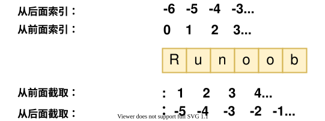

Python3 基本データ型
Python の変数は宣言する必要はありません。各変数は使用前に代入する必要があり、変数に代入して初めてその変数が作成されます。
Python では、変数はあくまで変数であり、型はありません。私たちが言う型とは、変数が指すメモリ内のオブジェクトの型のことです。
等号=は変数に値を代入するために使います。等号の左側は変数名、右側は変数に格納される値です。例：
例(Python 3.0+)
counter = 100 # 整数型変数
miles = 1000.0 # 浮動小数点型変数
name = "runoob" # 文字列
print(counter)
print(miles)
print(name)
例を実行 »
上記のプログラムを実行すると、次の結果が出力されます：
100 1000.0 runoob
複数変数への代入
Python では、複数の変数に同時に代入できます。例：
a = b = c = 1
上記の例では、値が 1 の整数オブジェクトを作成し、3 つの変数に同じ数値を代入しています。
複数の変数に異なる値を同時に指定することもできます。例：
a, b, c = 1, 2, "runoob"
上記の例では、整数オブジェクト 1 と 2 はそれぞれ変数 a と b に割り当てられ、文字列オブジェクト "runoob" は変数 c に割り当てられます。
変数の型は、type()関数で確認できます：
例
x = 10 # 整数
y = 3.14 # 浮動小数点数
name = "Alice" # 文字列
is_active = True # ブール値
# 複数変数への代入
a, b, c = 1, 2, "three"
# データ型の確認
print(type(x)) # <class 'int'>
print(type(y)) # <class 'float'>
print(type(name)) # <class 'str'>
print(type(is_active)) # <class 'bool'>
標準データ型
Python3 には 6 つの標準データ型と、bool ブール型があります（bool は int のサブクラスで、単独で列挙されることもあります）：
- Number（数値）
- String（文字列）
- bool（ブール型）
- List（リスト）
- Tuple（タプル）
- Set（セット）
- Dictionary（辞書）
可変かどうかによって、次の 2 つに分類できます：
- 不変データ（4 つ）：Number（数値）、String（文字列）、bool（ブール）、Tuple（タプル）
- 可変データ（3 つ）：List（リスト）、Dictionary（辞書）、Set（セット）
さらに、バイト配列型 bytes などの高度なデータ型もあります。
Number（数値）
Python3 はサポートしていますint、float、bool、complex（複素数）。
Python 3 では、整数型は int の 1 つだけで、長整数型として表現され、Python 2 の Long はありません。
組み込みのtype()関数を使用して、変数が指すオブジェクトの型を調べることができます。
>>> a, b, c, d = 20, 5.5, True, 4+3j >>> print(type(a), type(b), type(c), type(d)) <class 'int'> <class 'float'> <class 'bool'> <class 'complex'>
さらに、～を使ってisinstance()判断することもできます：
例
>>> isinstance(a, int)
True
isinstance 和 typeの違いは次のとおりです：
type()サブクラスを親クラスの型とは見なしません。isinstance()サブクラスを親クラスの型と見なします。
>>> class A: ... pass ... >>> class B(A): ... pass ... >>> isinstance(A(), A) True >>> type(A()) == A True >>> isinstance(B(), A) True >>> type(B()) == A False
注意：Python3 では、bool は int のサブクラスであり、True と False は数値と加算できます。True==1、False==0を返しますTrueが、～を使ってisオブジェクトの同一性を判断できます。
>>> issubclass(bool, int) True >>> True == 1 True >>> False == 0 True >>> True + 1 2 >>> False + 1 1 >>> 1 is True <stdin>:1: SyntaxWarning: "is" with 'int' literal. Did you mean "=="? False >>> 0 is False <stdin>:1: SyntaxWarning: "is" with 'int' literal. Did you mean "=="? Falseなぜ SyntaxWarning が発生するのですか？
Python は、あなたが～を使っていることを検出します
is整数リテラル（例: 1）と True を比較しています。これは通常コードの誤りです。なぜならis比較しているのはオブジェクトの同一性（同じオブジェクトかどうか）であり、値が等しいかどうかではありません。Python は～を使用することを推奨しています==値の比較には～を使用します。本当に同じオブジェクトかどうかを確認する必要がある場合を除きます。Python 2 にはブール型はなく、数字の 0 で False を、1 で True を表していました。
値を指定すると、Number オブジェクトが作成されます：
var1 = 1 var2 = 10
を使用できますdel文でオブジェクトへの参照を削除できます：
del var1[, var2[, var3[...., varN]]]
例：
del var del var_a, var_b
数値演算
例
9
>>> 4.3 - 2 # 減算
2.3
>>> 3 * 7 # 乗算
21
>>> 2 / 4 # 除算、浮動小数点数を得る
0.5
>>> 2 // 4 # 整数除算、整数を得る
0
>>> 17 % 3 # 剰余
2
>>> 2 ** 5 # べき乗
32
注意：
- Python は複数の変数に同時に代入できます。例:
a, b = 1, 2。 - 変数は代入によって異なる型のオブジェクトを指すことができます。
- 数値の除算には 2 つの演算子があります：/は浮動小数点数を返し、//は整数（切り捨て）を返します。
- 混合計算では、Python は整数を自動的に浮動小数点数に変換します。
数値型の例
| int | float | complex |
|---|---|---|
| 10 | 0.0 | 3.14j |
| 100 | 15.20 | 45.j |
| -786 | -21.9 | 9.322e-36j |
| 0o17 | 32.3e+18 | .876j |
| -0o112 | -90. | -.6545+0J |
| -0x260 | -32.54e100 | 3e+26J |
| 0x69 | 70.2E-12 | 4.53e-7j |
注意：Python 3 では整数リテラルの先頭ゼロは許可されていません（例:
080）。8進数は～を使用する必要があります0o接頭辞（例:0o17）。16進数は～を使用します0x接頭辞（例:0x69）。2進数は～を使用します0b接頭辞。
Python は複素数もサポートしています。複素数は実数部と虚数部から構成され、～を使用できますa + bjまたはcomplex(a, b)で表します。複素数の実部はaと虚部はbどちらも浮動小数点型です。
String（文字列）
Python の文字列はシングルクォート'またはダブルクォート"で囲み、同時にバックスラッシュ\を使用して特殊文字をエスケープします。
文字列のスライス構文は次のとおりです：
变量[头下标:尾下标]
インデックスは 0 から始まり、-1 は末尾からの位置を示します。

プラス記号+は文字列の連結演算子です。アスタリスク*は現在の文字列を複製し、結合する数字が複製の回数です。例は次のとおりです：
例
my_str = 'Runoob' # 文字列変数を定義（組み込み型を上書きするため、str を変数名に使わない）
print(my_str) # 文字列全体を出力：Runoob
print(my_str[0:-1]) # インデックス 0 から最後から2番目の文字までを出力（最後の文字は含まない）：Runoo
print(my_str[0]) # 最初の文字を出力：R
print(my_str[2:5]) # インデックス 2、3、4 の文字を出力（インデックス 5 は含まない）：noo
print(my_str[2:]) # インデックス 2 から末尾までを出力：noob
print(my_str * 2) # 2回繰り返して出力：RunoobRunoob
print(my_str + "TEST") # 文字列連結：RunoobTEST
上記のプログラムを実行すると、次の結果が出力されます：
Runoob Runoo R noo noob RunoobRunoob RunoobTEST
Python はバックスラッシュ\を使用して特殊文字をエスケープします。バックスラッシュをエスケープさせたくない場合は、文字列の前に～を追加しますr。これは raw 文字列を表します：
例
Ru
oob
>>> print(r'Ru\noob')
Ru\noob
また、バックスラッシュ（\）は行継続文字として使用でき、次の行が前の行の続きであることを示します。～を使用することもできます"""..."""または'''...'''複数行にまたがることができます。
注意：Python には単独の文字型はなく、1 文字は長さ 1 の文字列です。
例
>>> print(word[0], word[5])
P n
>>> print(word[-1], word[-6])
n P
C の文字列とは異なり、Python の文字列は変更できません。インデックス位置に代入する、例えばword[0] = 'm'はエラーを引き起こします。
注意：
- バックスラッシュはエスケープに使用でき、次を使用します
rプレフィックスを使用すると、バックスラッシュがエスケープされなくなります（ raw 文字列）。 - 文字列は次を使用して
+演算子で連結し、次を使用して*演算子で繰り返すことができます。 - Python の文字列には 2 つのインデックス方法があります。左から右へは 0 から始まり、右から左へは -1 から始まります。
- Python の文字列は変更できません。文字列は不変型です。
bool（ブール型）
ブール型は True または False です。Python では、True と False はどちらもキーワードであり、ブール値を表します。
ブール型はプログラムのフローを制御するために使用できます。たとえば、ある条件が成立するかどうかを判断したり、ある条件が満たされたときに特定のコードを実行したりできます。
ブール型の特徴：
- ブール型には True と False の 2 つの値しかありません。
- bool は int のサブクラスであるため、ブール値は整数として扱うことができます。True は 1 に相当し、False は 0 に相当します。
- ブール型は、数値や文字列などの他のデータ型と比較できます。比較するとき、Python は True を 1 と見なし、False を 0 と見なします。
- ブール型は論理演算子と一緒に使用できます。これには次のものが含まれます
and、or和not、複数のブール式を組み合わせるために使用されます。 - ブール型は、整数、浮動小数点数、文字列などの他のデータ型に変換することもできます。変換時、True は 1 に変換され、False は 0 に変換されます。
- 次を使用して
bool()関数を使用すると、他の型の値をブール値に変換できます。次の値をブール値に変換するとFalse：None、False、ゼロ（0、0.0、0j）、空のシーケンス（例：''、()、[]）および空のマッピング（例：{}）です。その他のすべての値はブール値に変換するとTrue。
例
a = True
b = False
print(type(a)) # <class 'bool'>
print(type(b)) # <class 'bool'>
# ブール型の整数としての表現
print(int(True)) # 1
print(int(False)) # 0
# bool() 関数を使用した変換
print(bool(0)) # False
print(bool(42)) # True
print(bool('')) # False
print(bool('Python')) # True
print(bool([])) # False
print(bool([1, 2, 3])) # True
# ブール論理演算
print(True and False) # False
print(True or False) # True
print(not True) # False
# ブール比較演算
print(5 > 3) # True
print(2 == 2) # True
print(7 < 4) # False
# 制御フローにおけるブール値の使用
if True:
print("This will always print")
if not False:
print("This will also always print")
x = 10
if x:
print("x は非ゼロ値であり、ブールコンテキストでは True です")
注意：Python では、ゼロ以外のすべての数値と、空でない文字列、リスト、タプルなどのデータ型は True と見なされます。ただし、0、空文字列、空リスト、空タプルなどは False と見なされます。したがって、ブール型変換を行うときは、データ型の真偽に注意する必要があります。
List（リスト）
List（リスト）は Python で最も頻繁に使用されるデータ型です。
リストは、ほとんどの集合系データ構造の実装を実現できます。リストの要素の型は同じである必要はなく、数値、文字列をサポートし、リスト（ネストされたリスト）を含むこともできます。
リストは角括弧[]の間に書き、コンマで区切った要素のリストです。
文字列と同様に、リストもインデックスとスライスが可能です。リストをスライスすると、必要な要素を含む新しいリストが返されます。
リストのスライス構文は次のとおりです。
变量[头下标:尾下标]
インデックス値は0を開始値とし、-1は末尾からの開始位置です。

プラス記号+はリストの連結演算子で、アスタリスク*は繰り返し操作です。次の例をご覧ください。
例
my_list = ['abcd', 786, 2.23, 'runoob', 70.2] # ビルトイン型を上書きするため、変数名に list を使用しないでください
tinylist = [123, 'runoob']
print(my_list) # リスト全体を出力：['abcd', 786, 2.23, 'runoob', 70.2]
print(my_list[0]) # 最初の要素（インデックス 0）を出力：abcd
print(my_list[1:3]) # インデックス 1 と 2 の要素を出力（インデックス 3 は含まない）：[786, 2.23]
print(my_list[2:]) # インデックス 2 から末尾までのすべての要素を出力：[2.23, 'runoob', 70.2]
print(tinylist * 2) # tinylist を 2 回繰り返して出力：[123, 'runoob', 123, 'runoob']
print(my_list + tinylist) # 2 つのリストを連結
上記の例の出力結果：
['abcd', 786, 2.23, 'runoob', 70.2] abcd [786, 2.23] [2.23, 'runoob', 70.2] [123, 'runoob', 123, 'runoob'] ['abcd', 786, 2.23, 'runoob', 70.2, 123, 'runoob']
Python の文字列とは異なり、リストの要素は変更できます：
例
>>> a[0] = 9
>>> a[2:5] = [13, 14, 15]
>>> a
[9, 2, 13, 14, 15, 6]
>>> a[2:5] = [] # 対応する要素の値を空のリストに設定して、これらの要素を削除します
>>> a
[9, 2, 6]
List には多くの組み込みメソッドがあります。たとえばappend()、pop()などがあります。これらについては後で説明します。
注意：
- リストは角括弧の間に書き、要素はコンマで区切ります。
- 文字列と同様に、リストはインデックスとスライスが可能です。
- リストは次を使用して+演算子で連結できます。
- リストの要素は変更できます（可変型）。
Python のリストスライスは 3 番目のパラメータを受け取ることができます。このパラメータはスライスのステップ幅です。次の例では、インデックス 1 からインデックス 4 までの位置でステップ幅を 2（1 つおきに要素を取得）に設定してリストをスライスします：

3 番目のパラメータが負の場合は逆方向に読み取ることを意味します。次の例は、文字列内の単語の順序を反転するために使用されます：
例
# スペースで文字列を区切り、各単語をリストに分割します
inputWords = input.split(" ")
# inputWords[-1::-1] の 3 つのパラメータの説明：
# 最初のパラメータ -1 は最後の要素から開始することを示します
# 2 番目のパラメータは空で、リストの先頭まで移動することを示します
# 3 番目のパラメータ -1 は逆方向のステップ（毎回左に 1 つ移動）を示します
inputWords = inputWords[-1::-1]
# 単語をスペースで再連結します
output = ' '.join(inputWords)
return output
if __name__ == "__main__":
input = 'I like runoob'
rw = reverseWords(input)
print(rw)
出力結果は次のとおりです：
runoob like I
Tuple（タプル）
タプル（tuple）はリストに似ていますが、タプルの要素は変更できない点が異なります。タプルは小括弧()の中に書き、要素はコンマで区切ります。
タプルの要素の型も同じである必要はありません：
例
my_tuple = ('abcd', 786, 2.23, 'runoob', 70.2) # 変数名に tuple を使用しないでください
tinytuple = (123, 'runoob')
print(my_tuple) # 完全なタプルを出力
print(my_tuple[0]) # 最初の要素を出力：abcd
print(my_tuple[1:3]) # インデックス 1 と 2 の要素を出力：(786, 2.23)
print(my_tuple[2:]) # インデックス 2 から始まるすべての要素を出力
print(tinytuple * 2) # tinytuple を 2 回出力
print(my_tuple + tinytuple) # 2 つのタプルを連結
上記の例の出力結果：
('abcd', 786, 2.23, 'runoob', 70.2)
abcd
(786, 2.23)
(2.23, 'runoob', 70.2)
(123, 'runoob', 123, 'runoob')
('abcd', 786, 2.23, 'runoob', 70.2, 123, 'runoob')
タプルは文字列と似ており、インデックス可能で、添字は 0 から始まり、-1 は末尾からの位置で、スライスも可能です。
実際には、文字列を特別なタプルと見なすことができます。
例
>>> print(tup[0])
1
>>> print(tup[1:5])
(2, 3, 4, 5)
>>> tup[0] = 11 # タプルの要素を変更する操作は無効です
Traceback (most recent call last):
File "<stdin>", line 1, in <module>
TypeError: 'tuple' object does not support item assignment
タプルの要素は変更できませんが、list リストなどの可変オブジェクトを含めることはできます。
0 個または 1 個の要素を含むタプルを構築するのは特別で、追加の構文規則があります：
tup1 = () # 空元组 tup2 = (20,) # 一个元素，需要在元素后添加逗号
1 つの要素だけを持つタプルを作成する場合は、その要素の後ろにコンマを追加して、それが通常の値ではなくタプルであることを区別する必要があります。コンマがない場合、Python は括弧を数学演算の括弧として解釈するためです：
not_a_tuple = (42) # 这是整数 42，不是元组
string、list 和 tupleはすべて sequence（シーケンス）に属します。
注意：
- 文字列と同様に、タプルの要素は変更できません（不変型）。
- タプルもインデックスとスライスが可能で、方法はリストと同じです。
- 0 個または 1 個の要素を含むタプルを構築する際の特別な構文規則に注意してください。
- タプルも次を使用して+演算子で連結できます。
Set（セット）
Python の集合（Set）は、順序付けられていない可変のデータ型で、一意の要素を格納するために使用されます。集合の要素は重複せず、交差、和集合、差集合などの一般的な集合演算を実行できます。
Python では、集合は中括弧{}で表し、要素間はコンマ,で区切ります。次を使用してもset()関数で集合を作成できます。
注意：空の集合を作成するにはset()ではなく{}を使用します。なぜなら{}は空の辞書を作成するからです。
作成形式：
parame = {value01, value02, ...}
或者
set(value)
例
sites = {'Google', 'Taobao', 'Runoob', 'Facebook', 'Zhihu', 'Baidu'}
print(sites) # 集合を出力（順序なし、重複要素は自動的に削除されます）
# メンバーシップテスト
if 'Runoob' in sites:
print('Runoob は集合内にあります')
else:
print('Runoob は集合内にありません')
# set は集合演算を実行できます
a = set('abracadabra')
b = set('alacazam')
print(a) # a の一意の文字
print(a - b) # a と b の差集合（a にはあるが b にはない）
print(a | b) # a と b の和集合（a または b のいずれかにある）
print(a & b) # a と b の積集合（a と b の両方にある）
print(a ^ b) # a と b の対称差集合（a または b にあるが、両方にはない）
上記の例の出力結果：
{'Zhihu', 'Baidu', 'Taobao', 'Runoob', 'Google', 'Facebook'}
Runoob 在集合中
{'b', 'c', 'a', 'r', 'd'}
{'r', 'b', 'd'}
{'b', 'c', 'a', 'z', 'm', 'r', 'l', 'd'}
{'c', 'a'}
{'z', 'b', 'm', 'r', 'l', 'd'}
Dictionary（辞書）
辞書（dictionary）は、Python のもう 1 つの非常に便利な組み込みデータ型です。
辞書はマッピング型であり、{}で表され、それはキー(key) : 値(value)の集合。キー(key) は不変型を使用しなければならず、同じ辞書内でキーは一意でなければなりません。
注意：Python 3.7 以降、辞書は要素の挿入順を保持し、もはや順序付けられていません。順序付き辞書の特性が必要な場合は、通常の
dictを使用すれば十分です。
例
my_dict = {}
my_dict['one'] = "1 - 菜鸟教程"
my_dict[2] = "2 - 菜鸟工具"
tinydict = {'name': 'runoob', 'code': 1, 'site': 'www.runoob.com'}
print(my_dict['one']) # キーが 'one' の値を出力
print(my_dict[2]) # キーが 2 の値を出力
print(tinydict) # 完全な辞書を出力
print(tinydict.keys()) # すべてのキーを出力
print(tinydict.values()) # すべての値を出力
上記の実例の出力結果：
1 - 菜鸟教程
2 - 菜鸟工具
{'name': 'runoob', 'code': 1, 'site': 'www.runoob.com'}
dict_keys(['name', 'code', 'site'])
dict_values(['runoob', 1, 'www.runoob.com'])
コンストラクタdict()キーと値のペアのシーケンスから直接辞書を構築できます：
例
{'Runoob': 1, 'Google': 2, 'Taobao': 3}
>>> {x: x**2 for x in (2, 4, 6)}
{2: 4, 4: 16, 6: 36}
>>> dict(Runoob=1, Google=2, Taobao=3)
{'Runoob': 1, 'Google': 2, 'Taobao': 3}
{x: x**2 for x in (2, 4, 6)}辞書内包表記を使用しています。詳細な内包表記の内容は以下を参照してください：Python 内包表記。
また、辞書型にはいくつかの組み込み関数もあります。例えばclear()、keys()、values()など。
注意：
- 辞書はマッピング型であり、その要素はキーと値のペアです。
- 辞書のキーは不変型でなければならず、重複することはできません。
- 空の辞書を作成するには{}。
- Python 3.7 以降、辞書は挿入順を保持します。
bytes 型
Python3 では、bytes 型は不変のバイナリシーケンス（byte sequence）を表します。文字列型とは異なり、bytes 型の要素は整数値（0 から 255 の間の整数）であり、Unicode 文字ではありません。
bytes 型は通常、バイナリデータの処理に使用されます。例えば、画像ファイル、音声ファイル、動画ファイルなどです。ネットワークプログラミングでは、バイナリデータの転送にも bytes 型がよく使用されます。
bytes オブジェクトを作成する最も一般的な方法は、bプレフィックスを使用することです：
例
print(x) # b'hello'
print(type(x)) # <class 'bytes'>
print(x[0]) # 104（'h' の ASCII 値、bytes の要素は整数）
使用することもできます。bytes()関数は他の型のオブジェクトを bytes 型に変換します。2 番目のパラメータでエンコーディング方式を指定します：
x = bytes("hello", encoding="utf-8")
文字列型と同様に、bytes 型もスライス、連結、検索、置換などの操作をサポートしています。bytes 型は不変であるため、変更操作には新しい bytes オブジェクトを作成する必要があります：
例
y = x[1:3] # スライス操作、b'el' を取得
z = x + b"world" # 連結操作、b'helloworld' を取得
print(y) # b'el'
print(z) # b'helloworld'
注意すべき点は、bytes 型の要素は整数値であるため、比較操作を行う際には対応する整数値を使用する必要があることです。ord()関数を使用して、文字を対応する整数値に変換できます：
例
if x[0] == ord("h"): # ord("h") は 104 を返す
print("最初の要素は 'h' です")
Python データ型変換
データの組み込み型を変換する必要がある場合があります。データ型を関数名として使用するだけです。次の章Python3 データ型変換で詳しく説明します。
以下の組み込み関数はデータ型間の変換を実行できます。これらの関数は変換後の値を表す新しいオブジェクトを返します：
| 関数 | 説明 |
|---|---|
x を整数に変換します |
|
x を浮動小数点数に変換します |
|
複素数を作成します |
|
オブジェクト x を文字列に変換します |
|
オブジェクト x を式文字列に変換します |
|
文字列内の有効な Python 式を評価し、オブジェクトを返します |
|
シーケンス s をタプルに変換します |
|
シーケンス s をリストに変換します |
|
可変集合に変換します |
|
辞書を作成します。d は (key, value) タプルのシーケンスである必要があります。 |
|
不変集合に変換します |
|
整数を対応する文字に変換します |
|
文字をその整数値（Unicode コードポイント）に変換します |
|
整数を 16 進数の文字列に変換します |
|
整数を 8 進数の文字列に変換します |
荆棘乱
llc***n@gmail.com
タプル（補足）
一般的に、関数の戻り値は通常 1 つです。
一方、関数が複数の値を返す場合は、タプルとして返されます。
例（コマンドライン）：
python の関数は可変長引数を受け取ることもできます。たとえば "*" で始まる引数名は、すべての引数をタプルに収集します。
例：
def test(*args): print(args) return args print(type(test(1,2,3,4))) #可以看见其函数的返回值是一个元组辞書（補足）
python の辞書はハッシュテーブル（hashtable）と呼ばれるアルゴリズムを使用しています（詳しくは説明しません）。
その特徴は、辞書にいくつの項目があっても、in 演算子にかかる時間はほぼ同じであることです。
辞書オブジェクトを for の反復対象として使用すると、その操作は辞書のキーを走査します：
def example(d): # d 是一个字典对象 for c in d: print(c) #如果调用函数试试的话，会发现函数会将d的所有键打印出来; #也就是遍历的是d的键，而不是值.荆棘乱
llc***n@gmail.com
我去咬你啦
815***114@qq.com
前の投稿の辞書の拡張について、テストする際、kye:value の組み合わせを出力したい場合は、次のようにできることがわかりました：
for c in dict: print(c,':',dict[c])または
for c in dict: print(c,end=':'); print(dict[c])そして、print() 関数は実際には複数の引数をカンマで区切って追加できることがわかりました。
もともとは
for c in dict: print(c+':'); print(dict[c])この方法で key：value を出力しようとしましたが、実際には key が string 型であるとは限らないため、+ 記号を使うと問題が発生することがわかりました。
我去咬你啦
815***114@qq.com
愤怒的胸毛毛
zha***aijun2013@foxmail.com
list を使用する際、最初に見落としがちな点は：
list[1:3] は実際には 2 つの要素だけを出力します。つまり list の 2 番目の要素から 3 番目の要素までであり、1 番目、2 番目、3 番目の 3 つの要素ではありません。また注意すべきは
この 2 つの文が出力する内容は実際には同じですが、
しかし 2 番目の文には角括弧があります。
------------------------------------------------------
以下はネットユーザーtemmple_wang@qq.comの補足です：
実は、次のように理解できると思います：
実際に試してみることができます：
実際、角括弧内の値は負の数にすることもできます：
----------------------------
list の補足:
この 2 つの文が出力する内容は実際には同じです:
ただし、型が異なることに注意してください。変数で受け取ってみてください：
愤怒的胸毛毛
zha***aijun2013@foxmail.com
hellowqp
wqp***a@foxmail.com
python が C 言語や Java 言語と異なる点の 1 つは、変数の型を宣言する必要がないことです。これは、C 言語や Java 言語が静的であるのに対し、python は動的であり、変数の型が代入される値によって決まるためです。例：
最初に変数 a に整数型を代入し、2 回目は浮動小数点数、3 回目は文字列を代入すると、最後の出力では最後に代入した値だけが保持されます。
hellowqp
wqp***a@foxmail.com
燕春
zqs***306010@qq.com
参考アドレス
type は未知のデータ型のオブジェクトを求めるために使用され、isinstance はオブジェクトが既知の型であるかを判断するために使用されます。
type はサブクラスを親クラスの一種とは見なしませんが、isinstance はサブクラスを親クラスの一種と見なします。
isinstance を使用してサブクラスのオブジェクトが親クラスを継承しているかを判断できますが、type ではできません。
以上の点を総合すると、type と isinstance はどちらもデータ型に関連していますが、実際には使い方が異なります。type は主に未知のデータ型を判断するために使用され、isinstance は主に A クラスが B クラスを継承しているかを判断するために使用されます：
# 判断子类对象是否继承于父类 class father(object): pass class son(father): pass if __name__ == '__main__': print (type(son())==father) print (isinstance(son(),father)) print (type(son())) print (type(son))実行結果：
燕春
zqs***306010@qq.com
参考アドレス
妞妞
704***556@qq.com
辞書（小さな拡張）
dict のキーと値のペアを入力するには、直接items()関数を使用できます：
dict1 = {'abc':1,"cde":2,"d":4,"c":567,"d":"key1"} for k,v in dict1.items(): print(k,":",v)妞妞
704***556@qq.com
hjc132
huj***heng132@gmail.com
辞書（小さな拡張）
原文では dict(d) が辞書を作成すると述べています。d は (key, value) タプルのシーケンスである必要があります。
実際、d は必ずしもタプルのシーケンスである必要はありません。以下のように：
>>> dict_1 = dict([('a',1),('b',2),('c',3)]) #元素为元组的列表 >>> dict_1 {'a': 1, 'b': 2, 'c': 3} >>> dict_2 = dict({('a',1),('b',2),('c',3)})#元素为元组的集合 >>> dict_2 {'b': 2, 'c': 3, 'a': 1} >>> dict_3 = dict([['a',1],['b',2],['c',3]])#元素为列表的列表 >>> dict_3 {'a': 1, 'b': 2, 'c': 3} >>> dict_4 = dict((('a',1),('b',2),('c',3)))#元素为元组的元组 >>> dict_4 {'a': 1, 'b': 2, 'c': 3}hjc132
huj***heng132@gmail.com
よく学び、日々向上しよう
522***154@qq.com
集合と辞書
順序なし：集合は順序を持たないため、インデックスをサポートしません。辞書も同様に順序を持ちませんが、その要素はキー（key）と値（value）の2つの属性からなるキーと値のペアであるため、キー（key）を使ってインデックスできます。
要素の一意性：集合は重複する要素を持たないシーケンスで、自動的に重複要素を除去します。辞書はキーの一意性があるため、同じ要素が現れることもありません。
よく学び、日々向上しよう
522***154@qq.com
Lonapse
270***302@qq.com
参考アドレス
#coding=utf8 ''''' 复数是由一个实数和一个虚数组合构成，表示为：x+yj 一个负数时一对有序浮点数(x,y)，其中x是实数部分，y是虚数部分。 Python语言中有关负数的概念： 1、虚数不能单独存在，它们总是和一个值为0.0的实数部分一起构成一个复数 2、复数由实数部分和虚数部分构成 3、表示虚数的语法：real+imagej 4、实数部分和虚数部分都是浮点数 5、虚数部分必须有后缀j或J 复数的内建属性： 复数对象拥有数据属性，分别为该复数的实部和虚部。 复数还拥有conjugate方法，调用它可以返回该复数的共轭复数对象。 复数属性：real(复数的实部)、imag(复数的虚部)、conjugate()（返回复数的共轭复数） ''' class Complex(object): '''''创建一个静态属性用来记录类版本号''' version=1.0 '''''创建个复数类，用于操作和初始化复数''' def __init__(self,rel=15,img=15j): self.realPart=rel self.imagPart=img #创建复数 def creatComplex(self): return self.realPart+self.imagPart #获取输入数字部分的虚部 def getImg(self): #把虚部转换成字符串 img=str(self.imagPart) #对字符串进行切片操作获取数字部分 img=img[:-1] return float(img) def test(): print "run test..........." com=Complex() Cplex= com.creatComplex() if Cplex.imag==com.getImg(): print com.getImg() else: pass if Cplex.real==com.realPart: print com.realPart else: pass #原复数 print "the religion complex is :",Cplex #求取共轭复数 print "the conjugate complex is :",Cplex.conjugate() if __name__=="__main__": test()Lonapse
270***302@qq.com
参考アドレス
記号
974***897@QQ.com
スライスはさらにステップ幅を設定できます。
記号
974***897@QQ.com
王二的弟弟
182***56065@163.com
参考アドレス
bool 型
Pythonでは、ブール値は定数を使ってTrue 和 False表します。
1、数値コンテキストでは、Trueとみなされ1，Falseとみなされ0、例えば：
2、他の型の値の変換bool時には...を除いて''、""、''''''、""""""、0、()、[]、{}、None、0.0、0L、0.0+0.0j、False 为 False、それ以外はすべてTrue例えば：
>>> bool(-2) True >>> bool('') False王二的弟弟
182***56065@163.com
参考アドレス
健子
136***9943@qq.com
対応1コメ、関数のパラメータが複数の場合、必ずしもタプルの形式で返されるわけではなく、自分で定義した戻り値の形式によります。
健子
136***9943@qq.com
went000
751***610@qq.com
上のコメントが1コメの意見に対して異論を唱えた件ですが、実際に1コメが言っていたのは戻り値が複数の場合であり、上のコメントが言うようなパラメータが複数の場合ではありません。
上記の実際の戻り値も1つだけであり、それはList型のパラメータです。
1コメが言った『戻り値が複数』とは：
went000
751***610@qq.com
flaray
144***3921@qq.com
Bool型の豆知識：
Python3はlong型を廃止し、0と1を独立させて真偽を判定するBool型を構成しました。つまり、0と1はfalseとtrueを判定するために使えます。しかし根本的には原則を変更していません。ここでのBool型は依然としてint型の一部であり、そのため依然として数字として演算に参加できます。したがって、Python3のBool型はint型の特殊なケースであり、独立した型ではありません。
flaray
144***3921@qq.com
甄能忽悠呀
813***866@qq.com
注意：リスト、タプル、集合には違いがあります（初心者は特に引っかかりやすいです）。
リストとタプルは同じ値をまとめませんが、集合は同じ値をまとめます。
>>> clist = ['tom','tom','jerry'] #测试列表功能 >>> print (clist） ['tom','tom','jerry'] >>>ctuple = ('tom','tom','jerry') #测试元组功能 >>>print(ctuple) ('tom','tom','jerry') >>>cset = {'tom','tom','jerry'} #测试集合功能 >>>print(cset) {'tom','jerry'}甄能忽悠呀
813***866@qq.com
dianmouren
yan***i4242@outlook.com
リスト作成の詳細についての補足：
>>> o = {1, 2, 3} >>> type(o) <class 'set'> >>> o = {} >>> type(o) <class 'dict'>dianmouren
yan***i4242@outlook.com
紫竹修韵
162***3732@qq.com
参考アドレス
辞書内包表記についていくつかの例：
# 字典推导式 p = {i:str(i) for i in range(1,5)} print("p:",p) ''' p: {1: '1', 2: '2', 3: '3', 4: '4'} ''' x = ['A','B','C','D'] y = ['a','b','c','d'] n = {i:j for i,j in zip(x,y)} print("n:",n) ''' n: {'A': 'a', 'B': 'b', 'C': 'c', 'D': 'd'} ''' s = {x:x.strip() for x in ('he','she','I')} print("s:",s) ''' s: {'he': 'he', 'she': 'she', 'I': 'I'} '''紫竹修韵
162***3732@qq.com
参考アドレス
Creepercdn
cre***rcdn@outlook.com
すべてのデータ型はクラスです。
つまり、int、strなどのデータ型は関数ではなく、単なるクラスにすぎません。
int()、str()、list()などを使うことは、対応するクラスの初期化です。つまり、123456、"Runoob"、[1,2,3] などは、対応するデータ型の初期化結果です。
多くの人や教育サイトがint、str、listなどのデータ型は関数だと思っていますが、これは誤りです。type(int)の出力結果はintがクラスであることを示しています。
Creepercdn
cre***rcdn@outlook.com
闫伟超
yif***chaoran@163.com
ここで変数とオブジェクトの関係を掘り下げます：
例えば、次の
このとき、aは異なる代入コードの行で参照するオブジェクトの型が異なり、aが参照するオブジェクトを絶えず変更していることに相当します。最終的に変数aを削除するとき、本質的にはaという変数名を削除しただけですが、aが参照していた[1,2,3]オブジェクトは、aが削除されたことで参照回数が0になり、自動的にPythonに回収されます。その結果、del aのときに[1,2,3]も削除されたことになります。
もう一つの豆知識として、Pythonはコードの実行効率とメモリ割り当ての効率を高めるために、よく使われる一部のオブジェクトをあらかじめ作成してメモリに常駐させます。例えば次の通りです：
id(4) #不管运行多少次该代码，其返回的值均不变，因为python会保持一些常用的数字常驻内存，不会每次都重新分配内存空间 id('hello world') #每次运行，返回的值均会发生变化，因为每次运行，相当于都在重新分配内存空间闫伟超
yif***chaoran@163.com
elliotalderson
274***2424@qq.com
typeの意味は、その変数自身の型を調べることであり、その親クラスの型を気にする必要はないと理解できます。
isinstanceの意味は、その変数の型がある大きな分類に属するかどうかを判断することであり、あたかも家系図を調べるように、あなたがその家族の一員かどうかを判断するようなものです。
isは、値が同じかどうかを比較するだけでなく、型が同じかどうかも比較します。そして、親クラスの型を比較するものではありません。
elliotalderson
274***2424@qq.com
MING
110***7859@qq.com
リストは順序付きのオブジェクト集合であり、辞書は順序なしのオブジェクト集合です。両者の違いは、辞書の要素はキーによってアクセスされ、オフセットによってアクセスされるわけではないことです。
ここで、「キー」と「オフセット」は、集合内の要素にアクセスするための異なる方法または仕組みを指します。
オフセット（Indexing）：
my_list = [10, 20, 30, 40]、2番目の要素（20）にアクセスするには、オフセットインデックスを使用できますmy_list[1]。ここでの1がオフセットであり、それはアクセスする要素がリスト内のどこにあるかを示します。キー（Key-based Access）：
my_dict = {'a': 10, 'b': 20, 'c': 30}の中で、'a'、'b'、'c'がキーであり、それらは関連付けられた値を取得するために使われます。例えば、キー'b'を使って値にアクセスできます。20。違いのまとめ：
したがって、リスト内の要素はその位置（オフセット）によって順序どおりにアクセスできますが、辞書内の要素はキー（位置ではなく）によってアクセスされ、アクセス順序が要素を追加した順序と同じであることは保証されません。
MING
110***7859@qq.com